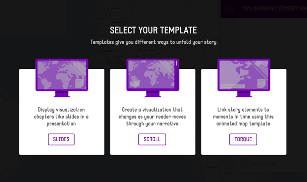
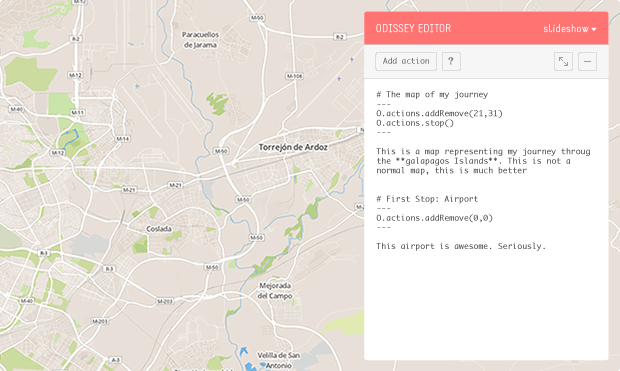

<div class="offcanvas">
  <div class="offcanvas-inner">
    <div class="offcanvas-collapse">
      <div class="offcanvas-collapse-inner">
        <div class="offcanvas-menu">
          <h3 class="offcanvas-title">Javascript API</h3>
          <ul>
            <li><a href="#">Install</a></li>
            <li><a href="#">Quick start</a></li>
            <li><a href="#">API</a></li>
          </ul>
        </div>

        <div class="offcanvas-menu">
          <h3 class="offcanvas-title">Editor</h3>
          <ul>
            <li><a href="#">Start a new history</a></li>
            <li><a href="#">Create a custom action in javascript</a></li>
            <li><a href="#">Add new actions to Editor menu</a></li>
            <li><a href="#">Create a story from scratch</a></li>
            <li><a href="#">Export a story as HTML</a></li>
          </ul>
        </div>
      </div>
    </div>

    <header class="header h-valign" id="header">
      <div class="header-animation">
        <span class="point point-01"></span>
        <span class="point point-02"></span>
        <span class="point point-03"></span>
        <span class="point point-highlight"></span>

        <div class="line">
          <svg version="1.1"  xmlns="http://www.w3.org/2000/svg" xmlns:xlink="http://www.w3.org/1999/xlink" x="0px" y="0px" width="177px" height="143px" viewBox="0 0 102.078 68.611" enable-background="new 0 0 102.078 68.611" xml:space="preserve">
            <line class="path" fill="none" stroke-width="1" stroke="#FDFDFE" stroke-linecap="square" stroke-miterlimit="10"  x1="2.482" y1="3.179" x2="100.418" y2="67.521"/>
          </svg>
        </div>

        <div class="line-2">
          <svg version="1.1"  xmlns="http://www.w3.org/2000/svg" xmlns:xlink="http://www.w3.org/1999/xlink" x="0px" y="0px" width="242px" stroke-width="2"  height="236px" viewBox="0 0 242 236" enable-background="new 0 0 242 236" xml:space="preserve">
            <line fill="none" stroke="#FDFDFE" stroke-linecap="square" stroke-miterlimit="10"  x1="0" y1="236" x2="242" y2="0"/>
          </svg>
        </div>
        <div class="line-3">
          <svg version="1.1"  xmlns="http://www.w3.org/2000/svg" xmlns:xlink="http://www.w3.org/1999/xlink" x="0px" y="0px" width="242px" stroke-width="2"  height="236px" viewBox="0 0 242 236" enable-background="new 0 0 242 236" xml:space="preserve">
            <line fill="none" stroke="#FDFDFE" stroke-linecap="square" stroke-miterlimit="10"  x1="0" y1="236" x2="242" y2="0"/>
          </svg>
        </div>
      </div>

      <div class="inner h-valigned">
        <div class="header-inner inner-l h-valign">
          <a href="/#menu" class="header-menu menu-link h-valigned"></a>
        </div>

        <div class="header-inner inner-r h-valign">
          <a href="#" class="download-link button h-valigned h-valign"><span class="h-valigned hide-mobile">Download</span><span class="h-valigned show-mobile"><i class="i-download"></i></span>
          </a>
        </div>

        <h1 class="site-title">ODYSSEY</h1>
<<<<<<< HEAD
        <p class="site-description">A simple way for journalists, designers,<br />and creators to weave interactive stories </p>
=======
        <p class="site-description">Create stories that combine narratives<br/> with maps and map interactions.</p>
>>>>>>> 2722b4f3b0cd8c787832f9372918e9fae6aa3039
        <p class="site-links">
          <a href='{{ "/editor/editor.html" | prepend: site.baseurl }}' class="button button-l button-primary h-valign"><span class="h-valigned">CREATE STORY</span></a>
          <a href='{{ "/documentation" | prepend: site.baseurl }}' class="button button-l h-valign btn-documentation"><span class="h-valigned">DOCUMENTATION</span></a>
        </p>
      </div>
    </header>

    <nav class="navbar h-valign">
      <div class="inner h-valigned">
        <div class="navbar-inner inner-l h-valign">
          <a href="/#menu" class="navbar-menu menu-link h-valigned"></a>
        </div>

        <a href="/" class="navbar-title">ODYSSEY</a>

        <div class="navbar-inner inner-r h-valign">
          <a href="#" class="download-link button h-valigned h-valign"><span class="h-valigned hide-mobile">Download</span><span class="h-valigned show-mobile"><i class="i-download"></i></span></a>
        </div>
      </div>
    </nav>

    <div class="content">
      <div class="inner">
        <section class="section" id="choose">
          <div class="col h-lalign">
            
          </div>

          <div class="col">
            <h2 class="section-title">2. Pick a template</h2>
            <p class="section-description">Templates allow you to change the basic way your story will unfold. Designs include scrolling, slide based, and temporal based templates. You can also contribute your own.</p>
          </div>
        </section>

        <section class="section">
          <h2 class="section-title">2. Craft your story</h2>
          <p class="section-description">The Odyssey Editor gives you an easy way to mix written narrative, multimedia, and map based interaction into a beautiful map driven story.</p>
          <div class="tips">
            

            <ul>
              <li class="tip tip-l">
                <i></i>
                <h3 class="tip-title">Record actions</h3>
                <p class="tip-description">Use the map to link pan and zoom actions to each stage of your story.</p>
              </li>

              <li class="tip tip-t">
                <i></i>
                <h3 class="tip-title">The map</h3>
                <p class="tip-description">Preview exactly what your reader will see as they move through your story.</p>
              </li>

              <li class="tip tip-r">
                <i></i>
                <h3 class="tip-title">Story options</h3>
                <p class="tip-description">Explore existing actions and behaviors directly in the editor.</p>
              </li>

              <li class="tip tip-r2">
                <i></i>
                <h3 class="tip-title">Markdown editor</h3>
                <p class="tip-description">Use Markdown to format and arrange your story content.</p>
              </li>
            </ul>
          </div>
        </section>

        <section class="section">
          <h2 class="section-title">Tell your own story</h2>
          <p class="section-links">
            <a href='{{ "/editor/editor.html" | prepend: site.baseurl }}' class="button button-pink button-primary button-l h-valign"><span class="h-valigned">New story</span></a>
            <a href='{{ "/documentation" | prepend: site.baseurl }}' class="button button-pink button-l h-valign"><span class="h-valigned">Documentation</span></a>
            <a href="#"></a>
          </p>
        </section>
      </div>
    </div>

    <div class="footer">
      <div class="inner">
        <h3 class="footer-title">Odyssey</h3>
        <p class="footer-description">is <a href="https://github.com/CartoDB/odyssey.js">open source</a> — a product developed by <a href="http://cartodb.com">cartodb.com</a></p>
        <p class="footer-description">Copyright © 2014</p>
      </div>
    </div>
  </div>
</div>
